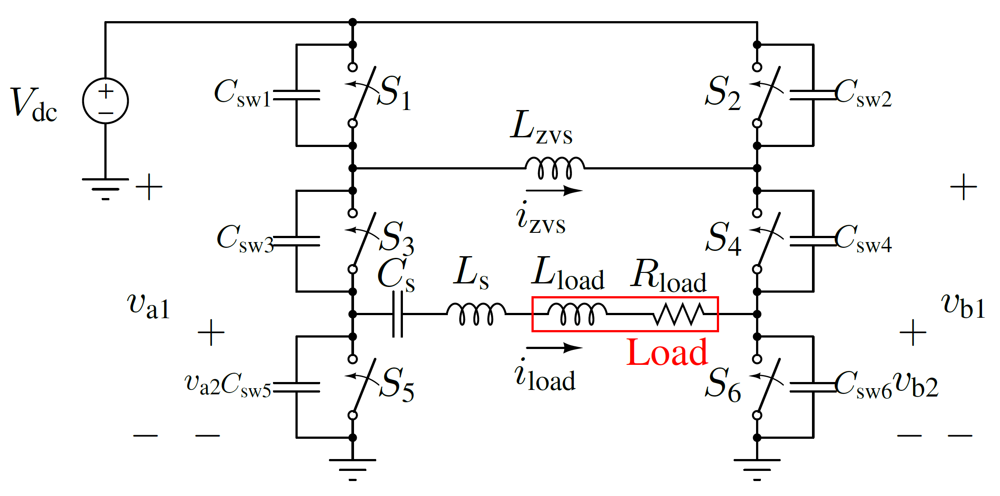
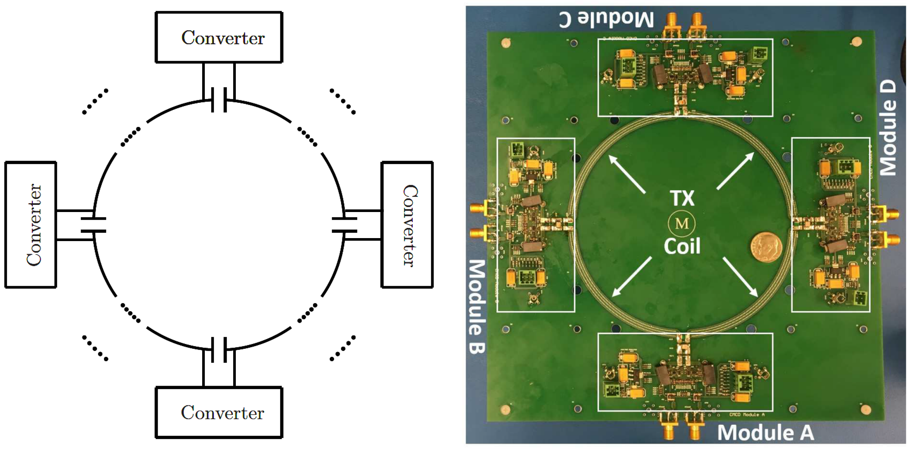
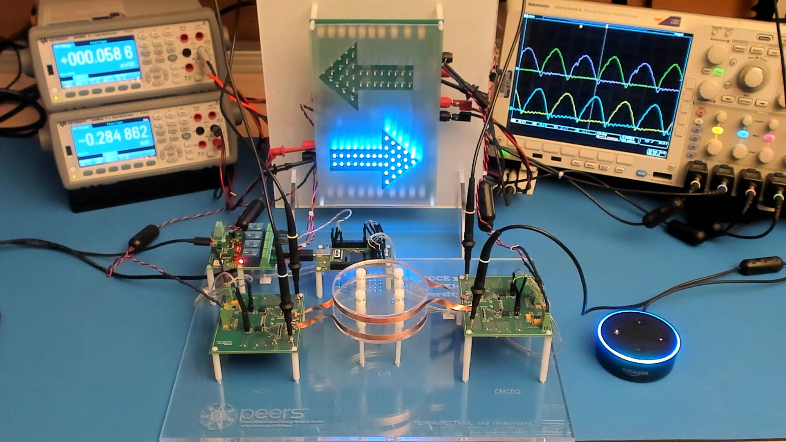

|
 |
Wide-Range Switched-Mode Power Amplifier Architecture
Zero-voltage switching for the entire wide-range operation
“10X” power range
“4X” resistive load range
-j15 Ohms to +j15 Ohms reactive load range
Mutiple circuit implementations
|
 |
100 MHz Wireless Power Transfer
79% dc-dc efficiency including gating loss for 1 cm gap and 6.9 W load power
Above 80% (83% peak) dc-dc efficiency without gating loss from 1.7 W to 6.9 W load power
Above 79% dc-dc efficiency including gating loss from 4.9 to 6.9 W load power
Current-mode class D (CMCD) power amplifier as transmitter and receiver
|
|
 |
Scalable Architectures for 100 MHz Wireless Power Transfer
Linearly scale up and down power level and transfer distance while maintaining efficiency
Synchronized and identical modular converters drive the segmented coils actively and simultaneously
Partition the power conversion and transmission among modular converters and segmented coils instead of single higher-power ones
|
 |
Ultrafast Isolated Gate Driver
Fully utilize the benefits of GaN HEMTs for VHF and pulse power
Ultrafast rise and fall times below 270 ps
Transformer isolation
Variable frequency up to 165 MHz and Variable duty cycles
Arbitrary long on- and off-times
Flexible control inputs
Customized for different GaN HEMTs with small gating loss
Integration possible
|
 |
Active Field Cancellation for Miniaturized Wireless Power Transfer
Excellent field cancellation performance with compactness and miniaturization
|
 |
Medium Voltage, High Accurate Current Pulse Generator
Flat-top current pulse and fast response time
A modular 4.5 kV pulse generator that delivers a 102 A peak current pulse for an 800 ns flat-top duration and ±1% accuracy
Fully scalable for different timing, voltage, and current requirements through a modular design
Model reduction and waveform shaping ameliorate the effect of the large parasitics
|
|
 |
Talkative, robust, and variable power transfer
|
|